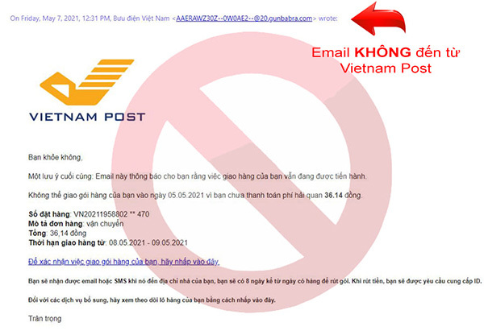

An toàn số hôm nay – Vững vàng tương lai ngày mai
- Là học sinh trong thời đại số, chúng em nhận thấy internet mang lại rất nhiều tiện ích nhưng cũng tiềm ẩn không ít rủi ro nếu chúng ta thiếu kiến thức và sự cảnh giác. Chính vì vậy, chúng em đã xây dựng trang web này với mong muốn chia sẻ những thông tin cơ bản, dễ hiểu về an toàn số, giúp mọi người – đặc biệt là các bạn học sinh – biết cách tự bảo vệ mình khi sử dụng không gian mạng.Chúng Em hy vọng rằng những nội dung trên trang web sẽ góp phần nâng cao ý thức, giúp việc sử dụng internet trở nên an toàn, lành mạnh và hiệu quả hơn.
- → Xuất phát từ thông điệp đó, nhóm chúng em đã xây dựng trang web "An toàn số". Đây không chỉ là một sản phẩm công nghệ, mà còn là một "Cẩm nang số" luôn sẵn sàng đồng hành, giúp các bạn học sinh chủ động trang bị kỹ năng tự bảo vệ mình giữa kỷ nguyên bùng nổ thông tin như hiện nay.
An Toàn Số là gì?
- An toàn thông tin số: Là quá trình sử dụng các biện pháp quản lý, kỹ thuật và công nghệ để bảo vệ dữ liệu hệ thống thông tin khỏi các hành vi truy cập, sử dụng, tiết lộ, phá hoại hoặc sửa đổi trái phép.
- Chúng ta đang sống trong thời đại mà mỗi cú click đều để lại dấu vết. Chỉ một sơ suất nhỏ cũng có thể khiến tài khoản bị xâm nhập, thông tin cá nhân bị khai thác hoặc trở thành nạn nhân của lừa đảo trực tuyến.
- Website này nhằm tổng hợp lại những kỹ năng tự vệ cơ bản nhất mà một học sinh cần trang bị trước khi bước vào môi trường đại học và đi làm.
- Trang web chính thức của Bộ Công an về an ninh mạng:
- 🔐 Thói quen cần nhận biết
- 🌐 Hậu quả để lại
- 💥 Nguy cơ mất an toàn
- 📶 Cách xử lí vấn đề
- 🛡 Bảo mật hai lớp (2FA)
- ⚖ Video điểm mới của luật an ninh mạng
- 📚 Góc chia sẻ
Nội dung trọng tâm
Mục tiêu của dự án là giúp người dùng chủ động bảo vệ bản thân trên không gian số một cách đơn giản và hiệu quả.
Cảnh báo của công an
🔎 NHẬN BIẾT NGUY CƠ TRÊN KHÔNG GIAN MẠNG
Tin nhắn hoặc email đáng ngờ:
- Nội dung thúc giục hành động gấp (ví dụ: “Tài khoản sẽ bị khóa ngay!”)
- Yêu cầu cung cấp mật khẩu, mã OTP hoặc thông tin cá nhân
- Đường link lạ, sai chính tả hoặc không rõ nguồn gốc

❗ Thói quen không an toàn
- Đăng nhập thông tin vào các trang web lạ.
- Đăng quá nhiều thông tin cá nhân lên các mạng xã hội.
- Sử dụng các loại wifi công cộng miễn phí.
- Dùng phần mềm không chính thống (crack).
- Cắm các USB, ổ đĩa lạ vào máy
- Tải các phần mềm, file ở các web không chính thống.
- Truy cập các đường link lạ chưa xác thực.
- Sao lưu dữ liệu quan trọng định kỳ.
⚠ Lời cảnh báo: Hậu quả & Nguy cơ nguy hiểm trên không gian mạng
1. Mất tiền & Tài sản 💸
- Khi nhấn vào các đường link giả mạo, người dùng có thể bị đánh cắp thông tin tài khoản ngân hàng, ví điện tử hoặc mã OTP.
- Kẻ gian có thể thực hiện giao dịch trái phép chỉ trong vài phút.
👉 Hậu quả: Mất tiền nhanh chóng và khó lấy lại.
2. Nghiện mạng xã hội & Giảm tập trung 📱
- Sử dụng mạng xã hội quá mức làm giảm khả năng tập trung.
- Dễ bị cuốn theo tin giả, nội dung độc hại.
👉 Hậu quả: Giảm hiệu suất học tập, mất định hướng và dễ bị thao túng tâm lý.
3. Tống tiền & Đe doạ tâm lý 😰
- Kẻ xấu lợi dụng hình ảnh, video riêng tư hoặc deepfake để đe doạ.
- Yêu cầu chuyển tiền nếu không sẽ phát tán thông tin.
👉 Hậu quả: Áp lực tinh thần, lo lắng kéo dài, ảnh hưởng đến học tập và cuộc sống.
4. Lộ thông tin cá nhân 🔓
- Họ tên, số CCCD, số điện thoại, địa chỉ, hình ảnh riêng tư có thể bị thu thập và sử dụng trái phép.
- Thông tin bị rao bán trên các diễn đàn ngầm.
👉 Hậu quả: Bị mạo danh vay tiền, đăng ký tài khoản xấu hoặc thực hiện hành vi phạm pháp dưới danh nghĩa của bạn.
5. Nguy cơ từ công nghệ Deepfake & AI 🤖
- Video, giọng nói giả mạo giống người thật đến 90-95%.
- Gọi điện khẩn cấp yêu cầu chuyển tiền gấp.
👉 Hậu quả: Bị mạo danh vay tiền, gia đình hoang mang, chuyển tiền vội vàng và bị chiếm đoạt tài sản.
Cảnh báo của Công an
✅ Biện pháp bảo vệ bản thân
- Sử dụng xác thực nhiều lớp (authenticator,sđt, email) 2FA
- Suy nghĩ thật kĩ trước khi truy cập một đường link nào.
- Không tải file lạ về máy.
- Kiểm soát thông tin chia sẻ trên mạng xã hội.
- Sử dụng mật khẩu riêng biệt cho từng tài khoản và thay đổi định kỳ
- Cài đặt phần mềm diệt virus uy tín.
- Đăng xuất tài khoản ngay sau khi sử dụng trên thiết bị công cộng.
- Sao lưu dữ liệu quan trọng định kỳ.
🛠 Cách xử lý khi gặp sự cố
- 1. Giữ bình tĩnh, ngắt kết nối internet ngay lập tức.
- Thay đổi mật khẩu các tài khoản quan trọng khác.
- Liên hệ ngân hàng để khóa tài khoản nếu liên quan tài chính.
- Quét virus trong các ứng dụng diệt virus

Cách xử lí được đề xuất
📺 Video: Tóm tắt Luật An Ninh Mạng
Luật An ninh mạng đã chính thức có hiệu lực. Là học sinh, chúng ta cần biết những gì để tránh vô tình vi phạm? Cùng xem video ngắn gọn dưới đây nhé:
🚫 3 Hành vi TUYỆT ĐỐI CẤM (Điều 8):
- Thông tin sai sự thật: Tung tin đồn nhảm, gây hoang mang dư luận (Ví dụ: tin giả về dịch bệnh, thiên tai, hoặc vu khống người khác).
- Kích động, chống phá: Đăng tải nội dung xúc phạm Quốc kỳ, Quốc huy, lãnh tụ hoặc kêu gọi bạo loạn, phá rối an ninh.
- Chiếm đoạt tài khoản: Hack nick, đánh cắp mật khẩu hoặc phát tán mã độc (virus) phá hoại hệ thống mạng.
🌱 Thông điệp gửi đến các bạn học sinh:
Trong thời đại công nghệ phát triển mạnh mẽ, Internet không chỉ là nơi học tập và giải trí mà còn là không gian sống thứ hai của mỗi chúng ta. Tuy nhiên, bên cạnh những lợi ích to lớn, môi trường số cũng tiềm ẩn rất nhiều rủi ro như lừa đảo, đánh cắp thông tin, bạo lực mạng hay công nghệ giả mạo tinh vi.
Vì vậy, mỗi học sinh cần trang bị cho mình kiến thức và kỹ năng an toàn số. Hãy suy nghĩ kỹ trước khi chia sẻ thông tin cá nhân, kiểm chứng nguồn tin trước khi tin tưởng, và luôn cảnh giác với những lời mời gọi hấp dẫn nhưng thiếu minh bạch. Một cú nhấp chuột có thể mở ra cơ hội, nhưng cũng có thể dẫn đến nguy hiểm nếu chúng ta thiếu hiểu biết.
An toàn số không phải là điều quá xa vời, mà bắt đầu từ những thói quen nhỏ hằng ngày: đặt mật khẩu mạnh, không cung cấp mã OTP cho người khác, không truy cập vào các đường link đáng ngờ, và mạnh dạn báo cáo khi phát hiện hành vi xấu.
Hãy trở thành những công dân số thông minh, văn minh và có trách nhiệm.
💭 Cảm nghĩ sâu sắc về chủ đề “An toàn số”:
Khi thực hiện website “An toàn số”, em nhận ra rằng nhiều bạn học sinh vẫn còn khá chủ quan trước các nguy cơ trên mạng. Chúng ta thường nghĩ rằng những vụ lừa đảo hay đánh cắp thông tin chỉ xảy ra với người lớn, nhưng thực tế học sinh cũng là đối tượng dễ bị nhắm đến.
Qua quá trình tìm hiểu, em hiểu rằng kiến thức chính là “lá chắn” vững chắc nhất. Nếu mỗi người đều được trang bị kỹ năng nhận biết và phòng tránh, không gian mạng sẽ trở nên an toàn và tích cực hơn rất nhiều.
Website này không chỉ là một sản phẩm học tập, mà còn là mong muốn của em trong việc lan tỏa nhận thức về an toàn số đến bạn bè xung quanh. Em hy vọng rằng, sau khi truy cập website, mỗi bạn học sinh sẽ biết cách tự bảo vệ mình và giúp đỡ người khác khi gặp rủi ro trên không gian mạng.
Nhóm Bảo Huy 12/2
- 📝 Bảo Huy: Xem ý tưởng, lập trình trang web
- 🎨 Anh Hoàng: Thiết kế bố cục, hỗ trợ lập trình
- 🌐 Ngọc Tân: Sưu tầm hình ảnh, video, bài báo
- 🔗 Hoàng Long: Chọn lọc nội dung, viết thông tin